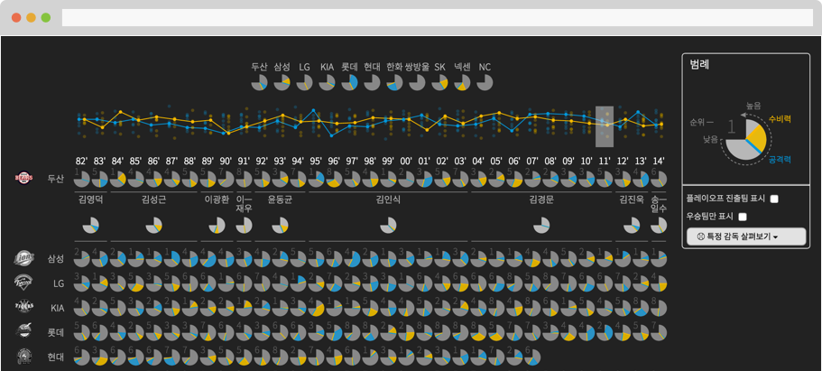
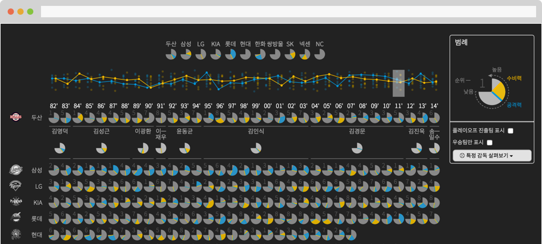

PROJECTS
2015.9
감독으로 보는 한국 프로야구의 역사
한국프로야구 개막 원년부터 작년 2014년까지의 역사를 감독을 중심으로 알아보았다.득점 및 실점 관련 기록을 바탕으로 시즌별 구단의 공격력과 수비력을 평가하고 이를 바탕으로 프로야구 전체 역사를 시각화 하였다.
인터랙티브 시각화 작업을 비정기적으로 생산하는 InfoVis 그룹입니다.
2015.9
감독으로 보는 한국 프로야구의 역사
한국프로야구 개막 원년부터 작년 2014년까지의 역사를 감독을 중심으로 알아보았다.득점 및 실점 관련 기록을 바탕으로 시즌별 구단의 공격력과 수비력을 평가하고 이를 바탕으로 프로야구 전체 역사를 시각화 하였다.
